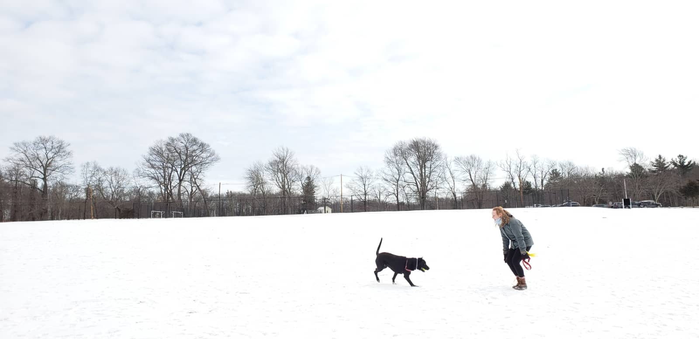

Hello! My name is Jess and I am a geospatial professional. I recently received my Master of Science in Geographic Information Science from Clark University. I additionally hold a Bachelor of Arts from Clark in Environmental Science with a Mathematics minor.
I have experience with, and a curiosity for, a variety of software packages (ArcGIS products, QGIS, TerrSet, GeoDa) and programming languages (R, JavaScript, Python, CSS, HTML). I seek to bridge the communication gap between the technical and the non-technical to improve human-environment relations.
In my free time, I enjoy rock climbing, rollerblading, hiking, and spending time with my dog, Mj. :-) Please explore my personal website where you'll find additional information about my skills and qualifications.
